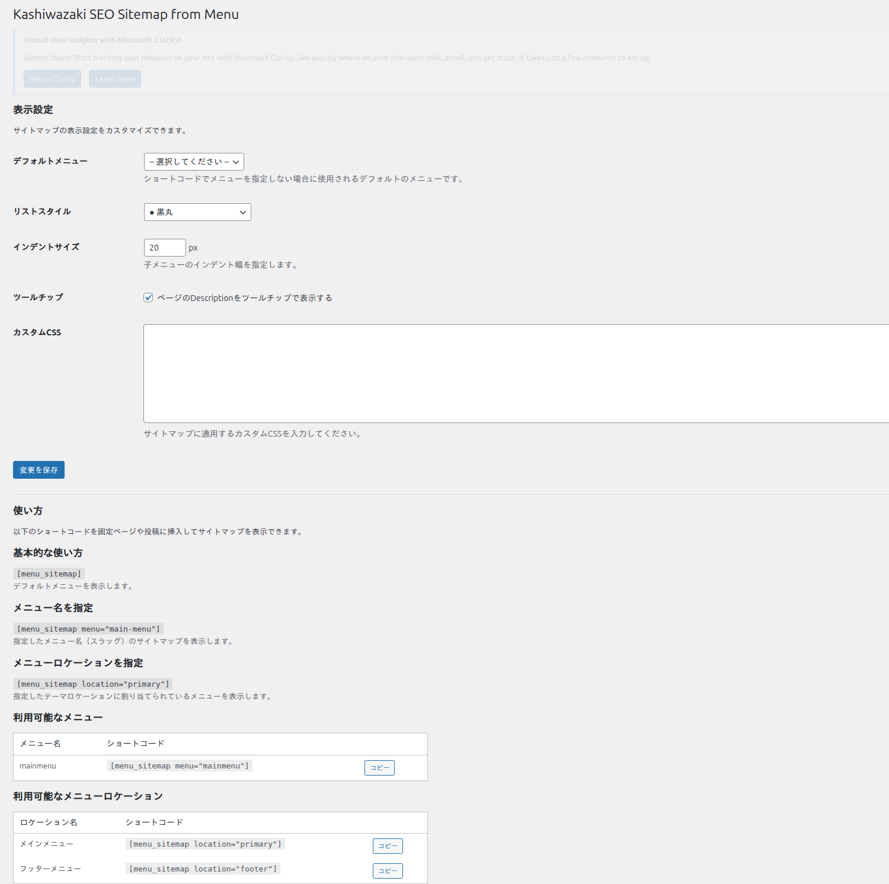

サイトマップの使い方
ショートコード [menu_sitemap] を使ったサイトマップの表示方法と、カスタムCSSによるスタイルカスタマイズについて解説します。
ショートコードの基本
固定ページまたは投稿にショートコード [menu_sitemap] を挿入するだけで、設定画面で選択したメニューのHTMLサイトマップが表示されます。

サイトマップを表示したい固定ページ（例: 「サイトマップ」ページ）を作成または編集します。
ブロックエディタの場合は「ショートコード」ブロックを追加し、クラシックエディタの場合はテキストモードで以下を入力します。
[menu_sitemap]ページを公開または更新すると、設定画面で選択したメニューの階層構造がHTMLサイトマップとして表示されます。
サイトマップページは固定ページとして作成し、パーマリンクを /sitemap/ に設定すると、ユーザーが見つけやすくなります。フッターやナビゲーションにリンクを追加することも推奨します。
サイトマップの出力構造
ショートコードは、ナビゲーションメニューの階層構造をネストされた <ul> / <li> タグで出力します。以下はディレクトリツリースタイルでの出力例です。
<div class="ksfm-sitemap ksfm-style-tree">
<ul>
<li><a href="/about/" title="会社概要ページ">会社概要</a>
<ul>
<li><a href="/about/team/">チーム紹介</a></li>
<li><a href="/about/access/">アクセス</a></li>
</ul>
</li>
<li><a href="/blog/">ブログ</a></li>
<li><a href="/contact/">お問い合わせ</a></li>
</ul>
</div>title 属性はツールチップが有効で、対象ページにSEOプラグインのメタ説明文が設定されている場合にのみ出力されます。
リストスタイルの表示例
設定画面で選択したリストスタイルに応じて、サイトマップの見た目が変わります。
| スタイル | 表示特徴 |
|---|---|
| 箇条書き（bullet） | • で始まる標準的なリスト。どのテーマにも馴染むデフォルトスタイルです。 |
| 丸（circle） | ○ で始まるリスト。階層が深い場合にマーカーの変化で区別しやすくなります。 |
| 四角（square） | ■ で始まるリスト。視認性が高く、コーポレートサイトに適しています。 |
| なし（none） | マーカーなし。インデントのみで階層を表現する、すっきりとしたデザインです。 |
| ディレクトリツリー | 罫線文字（├ └ │）を使ったファイルマネージャー風の表示。技術系サイトに人気です。 |
ツールチップの動作
ツールチップ機能が有効な場合、サイトマップのリンクにマウスカーソルを合わせると、対象ページのSEOメタ説明文がポップアップ表示されます。
ツールチップは以下の優先順位でメタ説明文を取得します。
Yoast SEO のメタ説明文 (_yoast_wpseo_metadesc)
All in One SEO のメタ説明文 (_aioseo_description)
Rank Math のメタ説明文 (rank_math_description)
SEOPress のメタ説明文 (_seopress_titles_desc)
ツールチップはHTML標準の title 属性を使用しています。CSSやJavaScriptによるカスタムツールチップではないため、ブラウザのネイティブ表示に依存します。
カスタムCSS
設定画面の「カスタムCSS」欄に任意のCSSを入力することで、サイトマップの見た目をカスタマイズできます。
カスタムCSSの記述例:
/* サイトマップのリンク色を変更 */
.ksfm-sitemap a {
color: #0073aa;
}
/* サイトマップのリンクホバー時の装飾 */
.ksfm-sitemap a:hover {
color: #005177;
text-decoration: underline;
}
/* 階層のインデント幅を調整 */
.ksfm-sitemap ul ul {
margin-left: 24px;
}カスタムCSSは設定画面に入力した内容がそのままフロントエンドに出力されます。構文エラーがあるとサイト全体のレイアウトに影響する可能性があるため、慎重に記述してください。